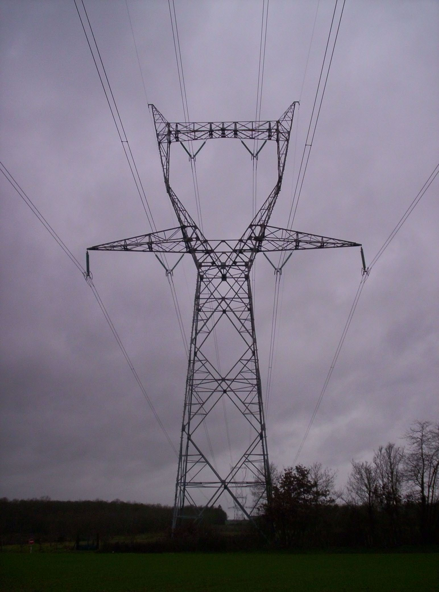
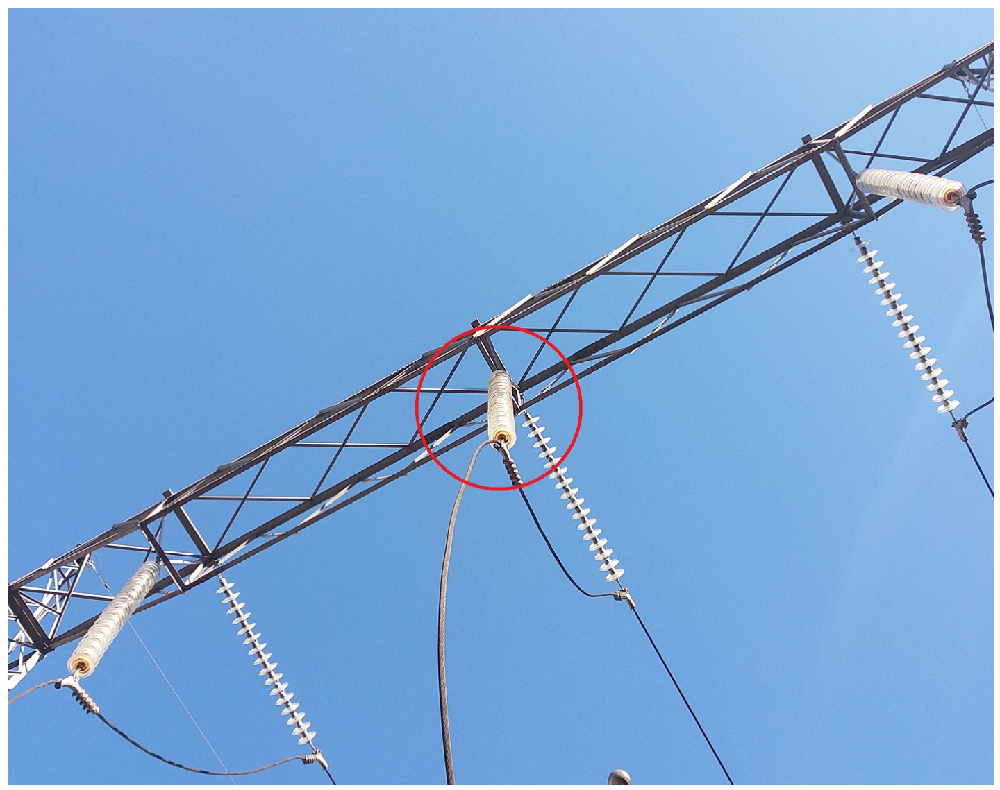
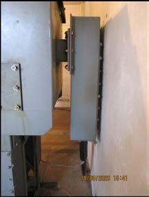

Spec (ESD)
Current direction: partial-discharge acoustic imaging for electrical inspection. Set: use case, drone platform and chip constraints. Everything marked TBD is still open; candidate values and supporting details are kept below.
Use casePartial-discharge inspection · set.
Commercial references
- CRYSOUND CRY2626G: PD and pressurized-gas leak inspection.
- FLIR Si2-PD: PD detection, classification and severity assessment.
- Fluke ii915: PDQ mode for PD classification; also leak and mechanical inspection.
These products establish an airborne-acoustic PD inspection use case; their detection claims are product-specific.
Locate airborne acoustic emissions from electrical partial discharge and overlay hotspots on a live camera feed.
Elevated transmission-line inspection
Reference scale: 400 kV · about 50 m tall · about 350 m between towers. National Grid, §4.4.3
Proposed approach: hover beside elevated insulators and fittings, targeting 10 m source-to-camera distance; 30 m stretch. Aim: reduce inspection climbs and reach equipment difficult to inspect from the ground.


Terminology: this tab uses the team’s “ESD” shorthand; the intended application is partial discharge (PD), not electrostatic-discharge testing.
Acoustic localization alone does not establish discharge type, apparent charge or severity.
Mounting platformDrone · set.
Commercial references
- CRYSOUND CRY2626G: Drone payload for DJI M300 RTK / M350 RTK; 2-axis gimbal and Skyport V2.
- FLIR Si2-PD: Handheld; drone integration not specified.
- Fluke ii915: Handheld with tripod mounting; drone integration not specified.
CRY2626G is the direct mounting reference; the handheld models provide acoustic-performance comparisons.
Drone-mounted inspection of elevated electrical assets. CRYSOUND CRY2626G provides a commercial mounting reference.
Frequency bandTBD · candidate 25–50 kHz ultrasonic band.
Commercial references
- CRYSOUND CRY2626G: 2–48 kHz.
- FLIR Si2-PD: 2–130 kHz.
- Fluke ii915: 2–100 kHz.
Our candidate 25–50 kHz band extends 2 kHz above CRY2626G’s published upper limit.
Justification: Kang et al. found 88.5% of valid corona detections within 25–45 kHz and recommended 30–40 kHz for short-distance measurements; they also cite prior findings concentrated at 30–50 kHz. Our 25–50 kHz target spans these reported bands.
Front end: select microphones with verified response through 50 kHz and a sample rate above 100 ksample/s, allowing an anti-aliasing transition band. The earlier 48 ksample/s PCM baseline cannot cover this band. The Microphones page now lists the Infineon IM66D130M; validation over 25–50 kHz is still pending.
Field of viewTBD · candidate camera-aligned sector (commercial reference)
Commercial references
- CRYSOUND CRY2626G: 62° camera FOV; separate acoustic coverage not specified.
- FLIR Si2-PD: 75° diagonal camera FOV; separate acoustic coverage not specified.
- Fluke ii915: 63° ±5° under acoustic sensing and imaging, also listed for the visible camera.
Camera FOV is a framing reference; acoustic coverage and angular resolution require separate validation.
Earlier candidate: 60–90° sector; acoustic coverage and camera alignment need validation. CRYSOUND CRY2626G lists a 62° camera FOV; that is not a measured acoustic-resolution specification.
Angular resolutionTBD
Commercial references
- CRYSOUND CRY2626G: Not published for acoustic angular resolution; the listed 1° is gimbal accuracy.
- FLIR Si2-PD: 1°–0.125° directional resolution (manufacturer’s terminology).
- Fluke ii915: Not published in the sources checked.
FLIR’s datasheet does not define a two-source separation test or its conditions; retain our resolution target as TBD.
Status: TBD. Minimum angular separation at which two sound sources can be distinguished. The target and measurement conditions remain to be defined.
Target rangeTBD · candidate 10–30 m (commercial reference)
Commercial references
- CRYSOUND CRY2626G: 0.5–35 m test distance.
- FLIR Si2-PD: 0.3–200 m operating distance.
- Fluke ii915: 0.5–120 m operating distance in the May 2024 product specifications; ambient conditions apply.
Published ranges depend on source strength, noise and propagation; they do not establish our array’s detection distance.
Retained from the earlier PD application draft. CRYSOUND CRY2626G lists a 0.5–35 m test distance; this is a commercial reference, not a demonstrated range for our array.
Performance depends on discharge emission strength, band, noise and the acoustic path. Existing project simulations cover 1–1.5 m only.
Update rateTBD · candidate 10–24 acoustic maps/s (commercial reference)
Commercial references
- CRYSOUND CRY2626G: Not published numerically; live imaging is described.
- FLIR Si2-PD: 30 acoustic images/s; camera video is 60 fps.
- Fluke ii915: 25 fps nominal; a separate acoustic computation rate is not specified.
FLIR supplies an explicit acoustic-map rate; Fluke’s nominal frame rate should retain its published label.
Working targets: 10 maps/s minimum, 20 baseline, 24 stretch; ≤0.5 s captured-audio-to-overlay latency.
Live maps support scanning as the camera moves. FLIR Si2-PD specifies 30 acoustic fps, establishing a commercial example rather than a minimum PD requirement. Acoustic-map rate and camera frame rate are separate.
Chip65 nm, 1 mm² die, ~660 × 660 µm usable core · set.
Shared tapeout constraint: 0.4356 mm² usable core. The ASIC computes acoustic maps; a host handles video overlay and display.
Existing FFT, memory and precision results belong to the audible-band baseline. They do not establish area or timing for the ultrasonic version.
ASIC justification: compare processing energy, latency and system size against MCU, embedded CPU and laptop implementations at matched map quality.
Commercial referenceCRYSOUND · FLIR · Fluke
Comparison scope
The comparison blocks use these same three models. Not published means no value was found in the manufacturer sources checked; it does not mean the product lacks that feature.
Checked 11 November 2026: CRYSOUND product specifications · FLIR datasheet (3 Oct 2025) · FLIR user manual · Fluke product specifications (May 2024) · Fluke product page
| Camera | Platform | Published reference |
|---|---|---|
| CRYSOUND CRY2626G | Drone-mounted | 128 microphones · 2–48 kHz · 0.5–35 m test distance · 62° optical FOV |
| FLIR Si2-PD | Handheld, dedicated PD | 124 microphones · 2–130 kHz · 30 acoustic fps · 75° diagonal optical FOV · onboard PD assessment |
| Fluke ii915 | Handheld | 2–100 kHz · 25 fps nominal · PDQ discharge-type classification |
Manufacturer specifications; handheld performance does not establish drone performance. These products provide references, not justification for our exact targets or a custom ASIC.
Uncertainties & justifications
Current focus: drone motion, drone noise / wind, and ASIC justification.
1. Why not a UV camera?UV can't detect inside cable box (EA Technology, FLIR)
EA Technology’s New Zealand case: ultrasound and transient earth voltage (TEV) indicated a defect inside the cable box. Inspection revealed incorrectly installed cable terminations.

2. Why not HFCT?Requires clamp installation—multiple clamps or repositioning for wider coverage.
Monitoring separate circuits simultaneously needs multiple clamps; surveying them sequentially means moving a clamp. One clamp can cover a connected cable section, so it is not necessarily one per tower or joint. Permanent clamps avoid repeated installation.
Álvarez et al., 2015 · EA Technology: permanent HFCT installation
3. Why not RF?RF arrival-time localization needs faster, more complex electronics than acoustic localization.
For arrival-time localization, sound’s slower propagation makes delays easier to measure: across 30 cm, up to about 875 µs for sound versus 1 ns for RF. This advantage concerns timing hardware; RF phase, direction-finding and signal-strength methods have different tradeoffs.
4. Why use an ASIC instead of an MCU / CPU?Faster. Comparison to be done.
M3-AC puts filtering, time-domain delay-and-sum and response power in FPGA logic; the CPU handles display and communication. That is the partition we can target. BeamformX confirms CPU imaging is feasible. Lower energy per map is a hypothesis to measure, not an established advantage of our chip.
5. How do we identify PD—is sound a reliable signifier?Corona/surface PD produces detectable ultrasound (30–50 kHz; −10 to 60 dB SPL at close range). Other sources can sound similar; PRPD helps distinguish PD.
Frequency: Kang et al. report 88.5% of valid corona detections at 25–45 kHz, recommend 30–40 kHz for short-distance measurement, and cite prior findings concentrated at 30–50 kHz. These are useful detection bands, not the entire emitted spectrum.
Loudness: EA Technology reports −10 to 60 dB SPL for surface discharge at close range, measured around 40 kHz. The distance is unspecified; this does not establish the level at our 10–30 m target range.
Identification: phase-resolved partial discharge (PRPD) examines acoustic pulse timing relative to the AC voltage cycle. Characteristic phase patterns help distinguish PD from other ultrasound; they do not eliminate every false positive.
Kang et al. (2023), §§2.2–3 — acoustic bands and PRPD · EA Technology / NETA World (2017), p. 65 — sound levels and phase patterns
6. How do we account for drone noise / wind?Use airflow protection and rotor shielding plus noise-aware beamforming; reject clipped or noise-dominated captures.
CRYSOUND combines physical absorption with processing. Manamperi et al. demonstrate multichannel noise suppression on a hovering drone, but not ultrasonic PD. Test the protection’s ultrasonic transmission and compare rotor-off, rotor-on and wind recordings; speech-band filter results cannot simply be assumed to transfer.
7. How do we account for drone motion during measurements?Hover for each capture; synchronize audio, video and pose, then align the acoustic map with the matching camera frame.
Calibrate camera-to-array alignment and compensate pose changes when combining frames. Tourbabin & Rafaely demonstrate moving-array compensation but assume negligible within-frame motion. Start with stationary captures; reject unstable windows until compensation is validated at our ultrasonic band.
8. How do we demo this?Demo live imaging with a low-voltage ultrasonic emitter; validate actual PD separately in a supervised lab with an electrical reference.
Yan et al. test an ultrasonic transducer before a real PD platform. Our first demo should show known source positions, the FPGA-generated overlay, localization error and latency. The later PD test adds simultaneous HFCT measurements and negative controls. The emitter demo proves the imaging pipeline, not PD identification.
Parameters
Design parameters are TBD. Microphone count, sampling rate, FFT size, selected bins and bit widths remain open. The expanded examples below describe earlier audible-band experiments, not committed specifications for ultrasonic PD.
AlgorithmFrequency-domain delay-and-sum
A standard, widely used approach to acoustic beamforming.
Research context: Valin et al. demonstrates real-time software localization; Hoshiba et al. processes UAV audio on a ground-station PC. Neither establishes an ASIC requirement or an RTL implementation.
- HBK: describes frequency-domain delay-and-sum / cross-spectral beamforming; the exact 9712 implementation is not confirmed. Technical review ↗
- Parsa: phase-steered delay-and-sum using a single-bin Goertzel transform, rather than a broadband FFT. Project ↗
Mic count / layoutTBD
Commercial references
- CRYSOUND CRY2626G: 128 MEMS microphones; exact coordinates and array aperture not published.
- FLIR Si2-PD: 124 MEMS microphones; exact coordinates and array aperture not published.
- Fluke ii915: 64 digital MEMS microphones; exact coordinates and array aperture not published.
Housing dimensions are not microphone-array aperture measurements; choose our count and geometry using quality and hardware-budget tests.
Bit widths
SNR
Digital input RMS
Evidence scope: LOCATA documents missed and false estimates in realistic scenes; Tourbabin & Rafaely assumes negligible within-frame motion. These papers do not extend the static, single-source results shown here to moving or reverberant scenes. DAMAS does not remove physical aperture limits.
Bits apply to input, FFT state and coefficients; sums retain extra precision. Fixed scaling; single source; no reflections, microphone mismatch or PDM conversion. Method and results.
Sampling rateTBD
Status: TBD. The values and results below are earlier exploratory examples, not final design requirements.
Status: TBD. The values and results below are earlier exploratory examples, not final design requirements.
3,072,000 PDM samples/s ÷ 64 = 48,000 PCM samples/s. The 24 kHz Nyquist limit accommodates both the 4 kHz baseline and 12 kHz stretch.
This earlier example used the TDK microphone. The current Infineon IM66D130M choice is documented in the Microphones tab; clock, PCM rate and decimation remain TBD for the ultrasonic band.
FFT sizeTBD
Status: TBD. The values and results below are earlier exploratory examples, not final design requirements.
512-point FFT, 30 mics, 32 selected bins (1–4 kHz). 10.67 ms/frame; 93.75 Hz/bin.
PCM frame: 30 mics × 512 samples × 16 bits ÷ 8 ÷ 1024 = 30 KiB.
Spectra: 30 mics × 32 bins × (16 + 16) bits ÷ 8 ÷ 1024 = 3.75 KiB.
Total: 30 + 3.75 = 33.75 KiB = 276,480 bits.
Storage-cell area: 276,480 bits × (0.495–0.570 µm²/bit) ÷ 1,000,000 = 0.137–0.158 mm².
| FFT size | PCM frame | Spectra | Total | Storage-cell area |
|---|---|---|---|---|
| 2048 | 120 KiB | 15 KiB 128 bins | 135 KiB | 0.547–0.630 mm² |
| 1024 | 60 KiB | 7.5 KiB 64 bins | 67.5 KiB | 0.274–0.315 mm² |
| 512 · chosen | 30 KiB | 3.75 KiB 32 bins | 33.75 KiB | 0.137–0.158 mm² |
Reference 65 nm bit cells; excludes memory peripherals, output maps and logic.
Core budget: 0.436 mm². 2048 exceeds it; 512 leaves room, but fit still needs verification.
IEEE VLSI 2008: 0.495 µm² cell ↗ · Intel / ISSCC 2011, slide 17: 0.570 µm² cell ↗
30-mic, 30 cm circle: worst error at −10 dB, across 1 m and 1.5 m: 5.00° / 3.02° / 2.22° for one 512 / 1024 / 2048 frame; 3.02° / 2.23° / 2.22° at equal 42.7 ms observation. All five configurations passed 54/54 single-source trials within 5°. Simulation only; 9 directions × 3 seeds × 2 distances.
Accuracy comparisons: Mic count / layout → Observation.
Selected binsTBD
Status: TBD. The values and results below are earlier exploratory examples, not final design requirements.
Bin frequency: fk = k × 48,000 ÷ 512 = k × 93.75 Hz.
1–4 kHz selects k = 11…42: 32 bins (1031.25–3937.5 Hz). The 1–12 kHz stretch selects k = 11…128: 118 bins, or 3.69× the beamforming contributions and selected-spectrum storage (13.83 KiB).
Bit widthsTBD
Status: TBD. The values and results below are earlier exploratory examples, not final design requirements.
Input: 16-bit PCM preserved every floating-point location across all 162 tested scene/level combinations.
Capture limit: bit width and clipping are separate issues. Záviška et al. shows that declipping depends on signal assumptions; the unclipped tests here do not establish performance with microphone overload.
Internal processing: fixed 16-bit FFT/beamforming lost accuracy on quiet inputs; 24-bit preserved every location in these tests.
| Input RMS | 12-bit | 16-bit | 20-bit | 24-bit |
|---|---|---|---|---|
| -18 dBFS | 54/54 | 54/54 | 54/54 | 54/54 |
| -48 dBFS | 11/54 | 53/54 | 54/54 | 54/54 |
| -72 dBFS | 0/54 | 8/54 | 53/54 | 54/54 |
Counts within 5° out of 54 scenes per level; −10 dB SNR. Levels are digital signal + noise RMS, not SPL.
Test conditions
30-mic, 30-cm circle; 512-point FFT; 1–4 kHz; one frame; 9 directions × 3 seeds × 2 distances (1 and 1.5 m). FFT scales by 1/2 per stage; coefficients and stage outputs are rounded to the listed width. Accumulators retain extra bits. No clipping occurred.
Different gain/scaling may allow narrower processing. This is a numerical model, not PDM or RTL simulation. The area comparison above still assumes 16 + 16-bit spectra.
Software

Architecture
Audible-band baseline; not yet adapted for ultrasonic PD. Frequency-domain DAS · logical processing flow with the current proposed channel count and sampling parameters.
Microphones
Infineon IM66D130MV01XTMA1 (IM66D130M) · current microphone choice for ultrasonic exploration.
| Item | Specification |
|---|---|
| Type / output | Bottom-port MEMS; digital PDM; two microphones can share a data line using opposite L/R settings. |
| Frequency response | Typical ultrasonic curve extends to 80 kHz; 35 Hz low-frequency roll-off and 33 kHz resonance. |
| Sensitivity | −37 dBFS ±1 dB at 1 kHz, 94 dB SPL. |
| SNR | 66 dB(A) typical at 3.072 MHz clock; A-weighted, 20 Hz–20 kHz bandwidth. |
| Acoustic overload | 130 dB SPL at 10% THD, 1 kHz. |
| PDM clock / PCM rate | TBD; 3.072 MHz is within the specified 2.84–3.44 MHz clock window. PCM rate depends on decimation. |
| Supply / current | 1.6–3.465 V; 540 µA typical / 640 µA maximum at 1.8 V, 3.072 MHz, <5 pF data load. |
| Package | 3.0 × 2.0 × 0.98 mm. |
Infineon datasheet, rev. 1.1 · pp. 4, 6, 9, 11, 13 · DigiKey · IM66D130MV01XTMA1
Applications
Alternative use cases, existing references and main objections.
| Application | Existing reference | Main objection(s) |
|---|---|---|
| Anti-poaching | Airborne gunshot-localization study | Why not an MCU? One direction estimate per event may be sufficient. |
| Power-line / partial-discharge inspection | FLIR acoustic partial-discharge inspection | Why not UV imaging for corona? Why not an MCU for occasional localization? |
| Search and rescue | Fraunhofer LUCY · drone-mounted acoustic research | Why not thermal imaging? Rotor noise can mask calls for help. |
| Mechanical inspection | FLIR Si2-Pro · 30 acoustic fps; OptiNav BeamformX · PC beamforming | Why not plug into a laptop? An embedded CPU also offers standalone operation. |
| Vehicle squeak / rattle | Reference ↗ · Candidate · 30-mic FPGA example; compact panel demo | Why not a laptop for a stationary test bench? |
| Material failure monitoring | Reference ↗ · Candidate · 30-mic FPGA example; sensitive to quiet events | Why not sparse event detection on an MCU? |
| Compressed-air leaks | Reference ↗ · Paper: MATLAB beamforming · product: 64-mic FPGA beamforming | Why not a simpler ultrasonic probe when a full map is unnecessary? |
| Electrical discharge inspection | Reference ↗ · 64-mic product · FPGA beamforming; algorithm unspecified | Why not UV imaging for corona, or occasional MCU processing? |
| Vacuum / pneumatic leaks | Reference ↗ · 64-mic product · FPGA beamforming; algorithm unspecified | Why not a handheld ultrasonic probe or PC processing? |
| Loose machinery joints | Reference ↗ · 64-mic product · FPGA beamforming; algorithm unspecified | Why not a contact vibration sensor at the suspected joint? |
| Aircraft flyover noise | Reference ↗ · 243-mic example · MOSI software beamforming | Why not PC processing when portability is not the constraint? |
| Wind turbine blade noise | Reference ↗ · ROSI software beamforming · hardware implementation not shown | Why not PC processing for a fixed monitoring setup? |
| Airborne noise mapping | Reference ↗ · 64-mic FPGA delay-and-sum · ground tests; flight proposed | Why not an embedded CPU if it meets the same power and latency budget? |
Supporting details
Anti-poaching
Mobile gunshot localization across hard-to-patrol terrain. Research ↗
Main objection: one direction estimate per event may suffice; an MCU may meet that workload without a custom ASIC.
Earlier illustrative targets: 0.5–10 kHz selectable bands; 360° azimuth; 100 m source-to-sensor range. Targets require validation with source loudness, wind and rotor state specified.
Power-line / partial-discharge inspection
Acoustic fault localization on hard-to-reach electrical equipment. Inspection reference ↗
Main objection: why choose acoustic sensing over UV imaging for corona, and why require an ASIC if occasional localization on an MCU is sufficient?
Earlier illustrative targets: 20–65 kHz; 60–90° inspection view aligned with video; 10–30 m source-to-sensor range. Requires ultrasonic microphones and revised sampling and processing. Ultrasonic bands ↗
Search and rescue
Aerial localization of calls for help when victims are difficult to see. Research ↗
Main objection: the drone can mask calls for help; what useful capability does acoustic sensing add beyond a thermal camera?
Earlier illustrative targets: 0.5–10 kHz with bands selected around measured rotor noise; 90–120° downward-looking sector; 20–50 m source-to-sensor range. These remain proposed targets. Rescue-band research ↗
Mechanical inspection
Why live maps: the camera moves while the source may stay still; updates keep the hotspot aligned with the component being inspected and help reveal intermittent noises.
Commercial reference: FLIR Si2-Pro specifies 30 acoustic fps, separately from its 60 fps optical camera and 70 fps screen. This supports a live-imaging workflow, not a universal minimum rate or a requirement for an ASIC.
| Product | Processing evidence | What it establishes |
|---|---|---|
| FLIR Si2-Pro | On-camera live imaging and severity assessment; cloud/desktop analysis and reporting | Standalone operation; CPU/FPGA/ASIC split not disclosed in reviewed documentation |
| FOTRIC TD2e | Manufacturer diagram explicitly identifies FPGA beamforming, followed by an embedded interactive platform | Hardware beamforming precedent; no custom ASIC claim |
| CAE SoundCam (64-mic model) | ARM A53, 4 × 1.2 GHz, Linux; up to 100 acoustic fps | Embedded CPU disclosed; full beamforming/accelerator split unspecified |
| OptiNav BeamformX + SIG array | USB acquisition into Windows software; manual states CPU speed limits live beamforming rate | Direct commercial precedent for laptop/PC processing |
Why not a laptop? It is a valid baseline. Embedded processing can reduce the equipment carried and dependence on a raw-audio link; an embedded CPU can offer those benefits too.
ASIC hypothesis: lower processing energy and smaller compute hardware at the same map quality and update rate; quantify against MCU, embedded CPU and PC baselines, including acquisition, transfer and display costs.
Scope: begin with an audible machinery-noise demonstrator; ultrasonic fault modes require different microphones and sampling. Commercial imagers establish workflow examples, not equivalent capability for our current band.
Product cases are manufacturer claims; fit assessments are provisional. FPGA examples do not establish ASIC feasibility.
Changelog
- · Software configuration inputs and separate analysis/display output
- · Simplified Software to a block diagram
- · Software flow, proposed RTL boundary and verification reference
- · Gunshot spec removed; open specs marked TBD; ASIC answer updated
- · PD sound evidence and PRPD; demo row restored
- · Drone platform; commercial PD references; priorities
- · 25–50 kHz PD band with research justification
- · Transmission-tower use case and field evidence
- · Direct PD answers; matching spec expansions
- · Eight PD justifications with research evidence
- · ESD uncertainty / approach table
- · Gunshot limitations grouped; PD questions added
- · Separate gunshot and partial-discharge specs
- · Limitations reordered; parameter evidence caveats
- · Limitations and supporting papers
- · Vehicle mounting added alongside drones
- · Unified application rows; How it works removed
- — Alternatives moved to Applications with main objections
- — Mechanical inspection and processing alternatives
- — Live-overlay targets for tapeout demonstrator
- — Use-case limitations
- — Secondary specs moved to details
- — Application-specific spec targets
- — Use-case rationale condensed
- — Applications and sensing limitations
- — Drone-mounted acoustic camera focus